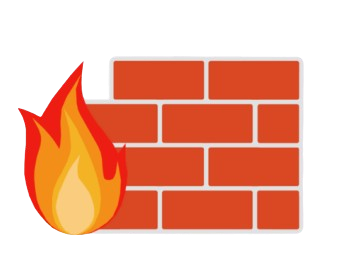
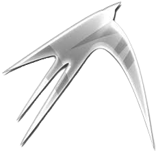

GINTS NGINX
programmatūras rīki


Uzdevuma prasības
Rezultāts
Rezultāts
Izveidots funkcionējošs Ubuntu Server ar:
Konfigurētu SSH piekļuvi.
Instalētu un konfigurētu Cockpit servera pārvaldībai.
Pilnībā funkcionējošu izvēlēto servera veidu (FTP/Web/Mediju).
Drošības iestatījumiem un pamata servera uzturēšanas mehānismiem.
Ubuntu Server instalācija
Izvēlies piemērotu Ubuntu Server versiju (vēlams LTS).
Veic tīru instalāciju, nodrošinot diska pareizu nodalīšanu.
Atjauninājumi un uzturēšana
Konfigurē automātiskus drošības atjauninājumus (unattended-upgrades).
Pārbaudi diska vietas izmantojumu un sistēmas veiktspēju.
GUI uzstādīšana pēc izvēles
(piem., LXDE, XFCE, LXQt u.c.).
Statiskā IP uzstādīšana
(izmantojot Netplan).
SSH piekļuve
Instalē OpenSSH serveri un nodrošini, ka tas ir konfigurēts drošai attālinātai piekļuvei.
Maini noklusējuma portu un konfigurē ugunsmūri, lai piekļuve būtu tikai atļautajiem lietotājiem.
Uzstādīt un pārbaudīt attālo pieslēgšanos
izmantojot Remote Desktop (no Windows ierīces).
Servera pārvaldības rīks: Cockpit
Instalē un konfigurē Cockpit kā servera pārvaldības rīku.
Nodrošini, ka Cockpit ir pieejams tikai lokālā tīkla administratoriem, izmantojot HTTPS.
Izvēlētā servera veida konfigurācija
FTP, Web, Medija utt.
Drošība
Konfigurē ufw ugunsmūri, lai atļautu piekļuvi tikai nepieciešamajiem portiem (piemēram, 22, 21).
Veic pamata aizsardzību pret uzbrukumiem, izmantojot fail2ban vai līdzīgu rīku.
Testēšana un dokumentācija
Pārbaudi servera darbību: veic piekļuves pārbaudi (piemēram, pieslēdzies FTP serverim vai tīmekļavietnei).
Dokumentē servera instalācijas un konfigurācijas soļus, lai tos varētu atkārtot vai atjaunot.